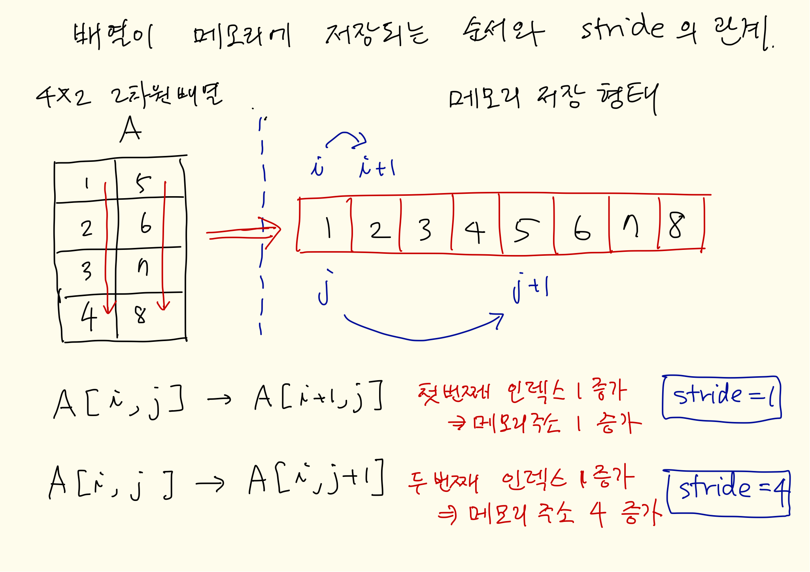

Julia 언어에서 배열(Array)는 계산을 위한 다른 언어에서와 비슷하게 정의되어 있다. 다만 파이선과 다르게 차원의 색인(index)는 1부터 시작한다.
모든 배열의 형식(type)은 최상위 추상형식(abstract type)인 AbstractArray의 하위형식(subtype)이다. 배열은 여러 개의 객체들을 구성요소(element)로서 모아놓은 형식이며 구성요소들의 형식은 Julia에서 정의된 거의 모든 형식이 가능하다.
배열을 이용한 행렬연산은 기본 패키지 LinearAlgebra가 필요하다.
using LinearAlgebra
배열를 정의하는 방법은 다양하지만 가장 간단하게 1차원 배열은 [A, B, C, ...] 과 같이 중괄호로 정의할 수 있다.
a= [1.0, 2.0, 3.0, 4.0]
4-element Array{Float64,1}:
1.0
2.0
3.0
4.0
위에서 4-element는 구성요소의 수가 4개이고 Array{Float64,1}는 배열이 Float64 형식의 실수로 구성된 1차원 배열이라는 의미이다. Julia에서는 1차원 dense 배열의 다른 이름은 Vector 가 된다.
isa(a,Vector)
true
typeof(a)
Array{Float64,1}
typeof(a) <: AbstractArray
true
만약 위의 명령어에서 컴마 ,를 제외하고 배열을 만들면 어떻게 될까?
b= [1.0 2.0 3.0 4.0]
1×4 Array{Float64,2}:
1.0 2.0 3.0 4.0
위에서 1×4 Array{Float64,2} 는 Float64 형식인 실수로 구성된 1x4의 2차원 배열을 의미한다. 여기서 유의할 점은 수학에서는 차원이 1x4 이면 (행)벡터이지만 julia 에서는 1x4 배열은 더 이상 1차원 배열이 아니고 2차원 배열이다.
Dense 2차원 배열의 특별한 이름은 Matrix 이다.
M1 = [ [1 2] ; [3 4] ]
2×2 Array{Int64,2}:
1 2
3 4
isa(M1, Matrix)
true
콜론 연산자 : 와 함수 collect를 사용하면 연속값을 가지는 벡터를 만들 수 있다.
collect(1:5)
5-element Array{Int64,1}:
1
2
3
4
5
collect(1:2:10)
5-element Array{Int64,1}:
1
3
5
7
9
collect(1.0:5.0)
5-element Array{Float64,1}:
1.0
2.0
3.0
4.0
5.0
Diagonal(collect(1.0:5.0))
5×5 LinearAlgebra.Diagonal{Float64,Array{Float64,1}}:
1.0 ⋅ ⋅ ⋅ ⋅
⋅ 2.0 ⋅ ⋅ ⋅
⋅ ⋅ 3.0 ⋅ ⋅
⋅ ⋅ ⋅ 4.0 ⋅
⋅ ⋅ ⋅ ⋅ 5.0
diagm(0 => collect(1.0:5.0))
5×5 Array{Float64,2}:
1.0 0.0 0.0 0.0 0.0
0.0 2.0 0.0 0.0 0.0
0.0 0.0 3.0 0.0 0.0
0.0 0.0 0.0 4.0 0.0
0.0 0.0 0.0 0.0 5.0
diagm(1 => collect(1.0:5.0), -1 => -collect(1.0:5.0))
6×6 Array{Float64,2}:
0.0 1.0 0.0 0.0 0.0 0.0
-1.0 0.0 2.0 0.0 0.0 0.0
0.0 -2.0 0.0 3.0 0.0 0.0
0.0 0.0 -3.0 0.0 4.0 0.0
0.0 0.0 0.0 -4.0 0.0 5.0
0.0 0.0 0.0 0.0 -5.0 0.0
A = rand(4,4)
4×4 Array{Float64,2}:
0.0977583 0.48052 0.256905 0.239091
0.0775865 0.714855 0.421087 0.531839
0.259653 0.525981 0.947528 0.115328
0.289527 0.406649 0.772087 0.83645
diag(A)
4-element Array{Float64,1}:
0.09775827064524756
0.7148548041743479
0.9475279626571109
0.8364502842597543
triu(A)
4×4 Array{Float64,2}:
0.0977583 0.48052 0.256905 0.239091
0.0 0.714855 0.421087 0.531839
0.0 0.0 0.947528 0.115328
0.0 0.0 0.0 0.83645
tril(A)
4×4 Array{Float64,2}:
0.0977583 0.0 0.0 0.0
0.0775865 0.714855 0.0 0.0
0.259653 0.525981 0.947528 0.0
0.289527 0.406649 0.772087 0.83645
Diagonal(A)
4×4 LinearAlgebra.Diagonal{Float64,Array{Float64,1}}:
0.0977583 ⋅ ⋅ ⋅
⋅ 0.714855 ⋅ ⋅
⋅ ⋅ 0.947528 ⋅
⋅ ⋅ ⋅ 0.83645
A=rand(2,2)
2×2 Array{Float64,2}:
0.0314641 0.213425
0.140712 0.506583
A*I
2×2 Array{Float64,2}:
0.0314641 0.213425
0.140712 0.506583
J = UniformScaling(1.)
LinearAlgebra.UniformScaling{Float64}
1.0*I
I == J
true
J2 = UniformScaling(-2.0)
LinearAlgebra.UniformScaling{Float64}
-2.0*I
A*J2
2×2 Array{Float64,2}:
-0.0629283 -0.426851
-0.281425 -1.01317
A = rand(3,2)
3×2 Array{Float64,2}:
0.330107 0.464927
0.518489 0.756347
0.465841 0.013376
A*J2
3×2 Array{Float64,2}:
-0.660215 -0.929854
-1.03698 -1.51269
-0.931683 -0.0267519
zeros(2,3)
2×3 Array{Float64,2}:
0.0 0.0 0.0
0.0 0.0 0.0
ones(2,3)
2×3 Array{Float64,2}:
1.0 1.0 1.0
1.0 1.0 1.0
ones(Int64,3,4)
3×4 Array{Int64,2}:
1 1 1 1
1 1 1 1
1 1 1 1
rand(5)
5-element Array{Float64,1}:
0.20045427442170527
0.26532408646917705
0.04983756317032273
0.7781936491681594
0.85889298184436
rand(3,3)
3×3 Array{Float64,2}:
0.656011 0.20509 0.219865
0.293638 0.101599 0.293809
0.0206012 0.417103 0.742774
randn(3,3) # from Normal(0,1)
3×3 Array{Float64,2}:
0.340499 0.153945 0.314725
0.147909 0.40351 1.53467
0.949506 0.384717 -1.23615
fill(2.0, 2,3)
2×3 Array{Float64,2}:
2.0 2.0 2.0
2.0 2.0 2.0
fill(true, 5)
5-element Array{Bool,1}:
true
true
true
true
true
A = zeros(3,3)
3×3 Array{Float64,2}:
0.0 0.0 0.0
0.0 0.0 0.0
0.0 0.0 0.0
fill!(A, x)는 A의 모든 요소를 x로 대치한다. Julia 에서 함수의 이름이 느낌표 ! 로 끝나는 함수는 통상적으로 인자의 내요을 바꾸어 주는 것을 의미한다.
fill!(A, 100.0)
3×3 Array{Float64,2}:
100.0 100.0 100.0
100.0 100.0 100.0
100.0 100.0 100.0
A = rand(3,3)
3×3 Array{Float64,2}:
0.503843 0.940818 0.0343024
0.257779 0.287548 0.962742
0.132908 0.328171 0.821852
B= rand(Int64,3,3)
3×3 Array{Int64,2}:
1910158396898735575 -5960445123009558774 -2740425540232975840
7730230534078768670 -2655989389237722976 2061387438295623285
-8636259343056385812 8502261434314130574 -7718534741494205903
C = similar(A)
3×3 Array{Float64,2}:
6.94873e-310 4.94066e-324 6.94873e-310
6.94873e-310 6.94873e-310 9.88131e-324
6.94873e-310 6.94873e-310 9.88131e-324
D = similar(B)
3×3 Array{Int64,2}:
140643781567312 1 140643780444896
140643780444336 140643780444416 2
140643780427088 140643780444496 2
eltype(A) : the type of the elements contained in A
length(A) : the number of elements in A
ndims(A) : the number of dimensions of A
size(A) : a tuple containing the dimensions of A
size(A,n) : the size of A along dimension n
axes(A) : a tuple containing the valid indices of A
axes(A,n) : a range expressing the valid indices along dimension n
eachindex(A): an efficient iterator for visiting each position in A
stride(A,k) : the stride (linear index distance between adjacent elements) along dimension k
strides(A) : a tuple of the strides in each dimension
출처 Julia 사용설명서
A = rand(4,2)
4×2 Array{Float64,2}:
0.490179 0.898875
0.640081 0.548089
0.499954 0.59147
0.133045 0.858171
eltype(A)
Float64
length(A)
8
ndims(A)
2
size(A)
(4, 2)
axes(A)
(Base.OneTo(4), Base.OneTo(2))
eachindex(A)
Base.OneTo(8)
아래 그림은 2 차원 배열의 구성요소가 메모리에 열방향(columnwise)으로 저장되는 경우를 나타낸 그림이다. 배열의 strides는 배열 색인(array index)의 변화와 메모리 상에서 구성요소의 위치 변화를 나타내는 양이다.

strides(A)
(1, 4)
stride(A,1)
1
stride(A,2)
4
A = rand(3,3); B = rand(3,3); C= rand(3,5)
A+B
3×3 Array{Float64,2}:
0.425008 0.588255 0.864269
0.667372 0.52178 0.714465
0.813133 1.02738 1.47716
A-B
3×3 Array{Float64,2}:
0.405313 -0.35617 -0.689447
0.383705 -0.29638 0.0315691
-0.230186 0.526174 0.118029
A*B
3×3 Array{Float64,2}:
0.0661461 0.26542 0.421545
0.215748 0.387748 0.700239
0.529116 0.655281 1.03368
tr(A)
1.3254546162856675
det(A)
-0.08618715475065289
b= rand(3); c=rand(3)
dot(b,c)
0.5795848827072919
a = [1;2;3]
3-element Array{Int64,1}:
1
2
3
b = [4;5;6]
3-element Array{Int64,1}:
4
5
6
Julia 에서 함수 cross는 두개의 3차원 벡터의 cross product를 계산해 준다.
\[ a = (a_1, a_2, a_3)^t \]
\[ b = (b_1, b_2, b_3)^t \]
\[ \text{cross} (a,b) = (a_2 b_3 - a_3 b_2, a_3 b_1 - a_1 b_3 , a_1 b_2 - a_2 b_1)^t \]
cross(a,b)
3-element Array{Int64,1}:
-3
6
-3
rank(A)
3
norm(a)
3.7416573867739413
sqrt(a'*a)
3.7416573867739413
norm(a, 1)
6.0
sum(abs.(a))
6
norm(a, Inf)
3.0
normalize(a)
3-element Array{Float64,1}:
0.2672612419124244
0.5345224838248488
0.8017837257372732
norm(A)
1.394988766665214
inv(A)
3×3 Array{Float64,2}:
2.31893 0.286074 -0.387931
3.60195 -3.54637 1.26381
-4.35537 3.34927 0.164713
b= rand(3)
3-element Array{Float64,1}:
0.19100684959902403
0.55504965547636
0.367075540697239
inv(A)*b
3-element Array{Float64,1}:
0.4593171018841258
-0.816500565734197
1.0875654898597946
역슬래쉬 A\b 또는 A\B 는 방정식 $Ax=b$ 또는 $AX=B$의 해 $bA^{-1}$ 또는 $A^{-1}B$를 구해준다. 이러한 작업을 left division이라고 부른다
A\b
3-element Array{Float64,1}:
0.45931710188412556
-0.8165005657341972
1.0875654898597948
슬래쉬 A/B 는 $AB^{-1}$를 구해준다. 이러한 작업을 right division이라고 부른다
A/B
3×3 Array{Float64,2}:
-0.755816 0.791717 0.594854
-0.450423 0.207653 0.959481
0.228096 1.55487 0.131683
A*inv(B)
3×3 Array{Float64,2}:
-0.755816 0.791717 0.594854
-0.450423 0.207653 0.959481
0.228096 1.55487 0.131683
행렬의 left division의 in-place 함수는 ldiv!(A,B)이며 이 함수는 A\B를 구해서 B에 저장한다. 단 주의할 점은 행렬 A의 형식이 원래의 행렬이 아니라 분해(factorization)된 형식이어야 한다.
아래 예제는 3x3 A 행렬의 QR 분해를 이용하여 Ax=b의 해를 b에 저장하는 절차이다.
A = [1 2.2 4; 3.1 0.2 3; 4 1 2]; x= [1; 2.5; 3]; A\x
3-element Array{Float64,1}:
0.7128099173553719
-0.05165289256198333
0.10020661157024785
ldiv!(qr(A),x) x
3-element Array{Float64,1}:
0.7128099173553719
-0.051652892561983674
0.10020661157024757
위에서 나온 것과 같이 배열의 형식은 Array{T,N} 으로 표시되며 T는 구성요소 객체의 형식, N은 차원을 나타낸다.
다음은 모든 요소를 0.0 으로 가지는 3차원 배열의 정의이다.
Z = zeros(4,3,2)
4×3×2 Array{Float64,3}:
[:, :, 1] =
0.0 0.0 0.0
0.0 0.0 0.0
0.0 0.0 0.0
0.0 0.0 0.0
[:, :, 2] =
0.0 0.0 0.0
0.0 0.0 0.0
0.0 0.0 0.0
0.0 0.0 0.0
함수 typeof를 이용하여 배열 Z의 형식을 구해보면 Array{Float64,3}이며 이는 구성요소가 Float64 실수로 구성된 3차원 배열이라는 의미이다.
typeof(Z)
Array{Float64,3}
두개의 콜론 ::은 변수 뒤에 붙이고 형식을 드러나게 알려줄 수 있다.
Z::Array{Float64,3}
4×3×2 Array{Float64,3}:
[:, :, 1] =
0.0 0.0 0.0
0.0 0.0 0.0
0.0 0.0 0.0
0.0 0.0 0.0
[:, :, 2] =
0.0 0.0 0.0
0.0 0.0 0.0
0.0 0.0 0.0
0.0 0.0 0.0
배열 Z의 구성요소가 어떤 형식인지 알아보자.
typeof(Z[1,1,1])
Float64
형식 비교연산자 T1 <: T1 는 형식 T1 이 형식 T2 의 부형식(subtype)인지 판단해 준다.
(typeof(Z[1,1,1]) <: Float64 , typeof(Z[1,1,1]) <: Real, typeof(Z[1,1,1]) <: Int)
(true, true, false)
위에서 배열 Z의 원소 Z[1,1,1]의 형식은 Float64 이고 Real의 부형식(subtype)이지만 배열 Z의 형식 Array{Float64,3}는 Array{Real,3}의 부형식은 아니다 (invariant, rather than being covariant Julua 사용설명서 )
typeof(Z) <: Array{Real,3}
false
배열의 구성요소가 배열이 될 수도 있다. 다음은 2x3 2차원 배열을 원소 2개로 이루어진 1차원 배열을 정의항 것이다.
A1 = rand(2,3) ; A2= rand(2,3) AA = [A1, A2]
2-element Array{Array{Float64,2},1}:
[0.73464 0.435891 0.508927; 0.581979 0.532087 0.371014]
[0.323365 0.668569 0.915632; 0.258075 0.281121 0.300244]
위에서 Array{Array{Float64,2},1}는 Array{Float64,2} 형식의 객체로 구성된 1차원 배열을 의미한다. 즉 행렬의 형식 Array{T,N} 에서 T = Array{Float64,2} 이고 N = 1 이다.
구성원소 AA[1]는 2차원 배열이다. .
AA[1]
2×3 Array{Float64,2}:
0.73464 0.435891 0.508927
0.581979 0.532087 0.371014
배열의 구성요소가 배열일 경우 차원(N)만 같고 차원의 크기가 달라도 된다.
B1 = rand(2,2) ; B2= rand(3,3) BB= [B1, B2]
2-element Array{Array{Float64,2},1}:
[0.783432 0.355056; 0.154926 0.146445]
[0.990959 0.735831 0.0544737; 0.814876 0.959506 0.675822; 0.017478 0.94069
5 0.981136]
typeof(B1) == typeof(B2)
true
특별한 점은 구성요소 배열의 차원(N)이 달라도 배열이 정의가 된다는 것이다.
C1 = rand(2,2) # 2차원 배열; C2 = rand(2,2,2) # 3차원 배열
2×2×2 Array{Float64,3}:
[:, :, 1] =
0.0957166 0.126488
0.716458 0.730263
[:, :, 2] =
0.812336 0.035893
0.601171 0.718543
typeof(C1)
Array{Float64,2}
typeof(C2)
Array{Float64,3}
typeof(C1) == typeof(C2)
false
CC = [C1 ,C2]
2-element Array{Array{Float64,N} where N,1}:
[0.622339 0.387131; 0.892356 0.858092]
[0.0957166 0.126488; 0.716458 0.730263]
[0.812336 0.035893; 0.601171 0.718543]
위에서 주목할 점은 배열 CC의 구성요소의 형식이 Array{Float64,N} where N으로 나타나고 있다. 이러한 형식을 모수 형식(parametric type)이라고 부르며 N은 배열의 차원을 모수로 지정하며 여러 가지 가능한 값들(예를 들어 1,2,3,...)을 취할 수 있는 특별한 형식이다.
뒤의 문장 where N은 전체집합 형식(UnionAll)을 지정하는 문장이며 가능한 차원(N)을 반복적으로 포함하게 지정하는(iterated union of types for all values of some parameter) 기능을 한다.
Array{Float64,N} where N은 구성요소를 Float64로 가지는 모든 차원(N=1,2,3,...)의 배열을 나타내는 형식이다.
이러한 모수 형식과 전체집합 형식의 이용은 수학에서의 집합의 연산에 해당된다고 이해하면 된다. Array{Float64,N} where N 은 다음과 같은 집합(형식)을 나타낸다.
\[ \bigcup_{N \in \mathbb{N}} \text{Array\{Float64,N\}}, \quad \text{ where } \quad \mathbb{N} \text{ is a set of all possible values for } N \]
Array{T,N} where N where T. 은 다음과 같은 전체집합(형식)을 나타낸다.
\[ \bigcup_{N \in \mathbb{N}} \left ( \bigcup_{T \in \mathbb{T} } \text{Array\{T,N\}} \right ), \quad T \in \mathbb{T}, N \in \mathbb{N} \]
아래와 같이 배열의 구성요소가 같지 않으면 Julia는 결과의 형식을 구성요소들의 형식들을 모두 포함하는 전체집합 형식(UnionAll)의 배열로 만들어 준다.
T1 = [["A" "B"]; ["C" "D"]] # 2차원 문자열 행렬
2×2 Array{String,2}:
"A" "B"
"C" "D"
T2 = [ [1 2] ; [3 4] ] # 2차원 정수형 행렬
2×2 Array{Int64,2}:
1 2
3 4
아래의 배열 TT는 1차원 행렬이며 구성요소는 Array{T,2} where T로서 구성원소의 형식이 모수적으로 정의된 2차원 배열들이다. 따라서 2차원 문자배열 String 과 2차원 정수배열 Int64 을 그 구성요소로 가질 수 있다.
TT = [ T1, T2]
2-element Array{Array{T,2} where T,1}:
["A" "B"; "C" "D"]
[1 2; 3 4]
위에서 다룬 3차원 실수 배열 Z 형식은 Array{T,3} where T에 속한다.
typeof(Z) <: Array{T,3} where T
true
아래와 같이 연산자 ' 또는 함수 transpose 를 사용하여 벡터, 행렬의 전치(transpose)를 계산한다.
a = [1.0, 2.0, 3.0, 4.0]
4-element Array{Float64,1}:
1.0
2.0
3.0
4.0
at = a'
1×4 LinearAlgebra.Adjoint{Float64,Array{Float64,1}}:
1.0 2.0 3.0 4.0
전치된 결과를 저장한 배열의 형식은 2차원 배열 1x4 Array{Float64,2}가 아니라 1×4 LinearAlgebra.Adjoint{Float64,Array{Float64,1}} 으로 나타나며 이는 기본 패키지(base) LinearAlgebra에 있는 Adjoint 형식으로 나타난다.
즉 어떤 연산의 결과는 결과값의 형식만을 저장하지 않고 연산의 과정과 결과을 모두 형식으로 나타내어 준다.
typeof(at)
LinearAlgebra.Adjoint{Float64,Array{Float64,1}}
Adjoint 형식은 전치를 하기 전에 원래의 벡터에 대한 정보를 가지고 있어서 parent 함수로 그 값을 알 수 있다.
parent(at)
4-element Array{Float64,1}:
1.0
2.0
3.0
4.0
A= rand(3,3)
3×3 Array{Float64,2}:
0.882106 0.29426 0.0316862
0.758018 0.826077 0.282812
0.258124 0.159588 0.250873
At = transpose(A)
3×3 LinearAlgebra.Transpose{Float64,Array{Float64,2}}:
0.882106 0.758018 0.258124
0.29426 0.826077 0.159588
0.0316862 0.282812 0.250873
parent(At)
3×3 Array{Float64,2}:
0.882106 0.29426 0.0316862
0.758018 0.826077 0.282812
0.258124 0.159588 0.250873
이제 상삼각행렬의 형식으로 행렬을 변환해보자. 앞에서 본 것과 같이 연산 전의 정보를 모두 가지고 있다.
A = [4. 12. -16.; 12. 37. -43.; -16. -43. 98.]
3×3 Array{Float64,2}:
4.0 12.0 -16.0
12.0 37.0 -43.0
-16.0 -43.0 98.0
Au = UpperTriangular(A)
3×3 LinearAlgebra.UpperTriangular{Float64,Array{Float64,2}}:
4.0 12.0 -16.0
⋅ 37.0 -43.0
⋅ ⋅ 98.0
parent(A)
3×3 Array{Float64,2}:
4.0 12.0 -16.0
12.0 37.0 -43.0
-16.0 -43.0 98.0
어떤 연산은 변환 전의 정보를 가지고 있지 않는다. 대각행렬을 만드는 함수인 Diagonal는 원래 행렬의 대각원소 정보만 가지고 온다. 따라서 Diagonal 함수가 적용되기 전의 원래 행렬은 결과로 알 수 없다.
Ad = Diagonal(A)
3×3 LinearAlgebra.Diagonal{Float64,Array{Float64,1}}:
4.0 ⋅ ⋅
⋅ 37.0 ⋅
⋅ ⋅ 98.0
parent(Ad)
3-element Array{Float64,1}:
4.0
37.0
98.0
diag(A)
3-element Array{Float64,1}:
4.0
37.0
98.0